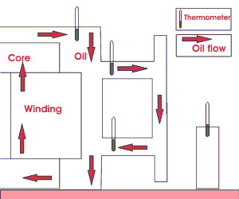
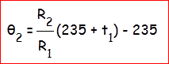
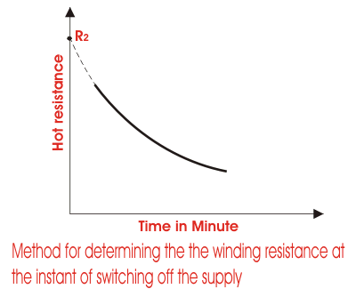

Temperature rise test of Transformer is included in type test of transformer. In this test we check whether the temperature rising limit of transformer winding and oil as per specification or not.
Temperature Rise Test for Top Oil of Transformer
- First the LV winding of the transformer is short circuited.
- Then one thermometer is placed in a pocket in transformer top cover. Other two thermometers are placed at the inlet and outlet of the cooler bank respectively.
- The voltage of such value is applied to the HV winding that power input is equal to no load losses plus load losses corrected to a reference temperature of 75°C.
- The total losses are measured by three watt-meters method.
- During the test, hourly readings of top oil temperature are taken from the thermometer already placed in the pocket of top cover.
- Hourly readings of the thermometers placed at inlet and outlet of the cooler bank are also noted to calculate the mean temperature of the oil.
- Ambient temperature is measured by means of thermometer placed around the transformer at three or four points situated at a distance of 1 to 2 meter from and half-way up the cooling surface of the transformer.
- Temperature rise test for top oil of transformer should be continued until the top oil temperature has reached an approximate steady value that means testing would be continued until the temperature increment of the top oil becomes less than 3°C in one hour. This steady value of top oil is determined as final temperature rise of transformer insulating oil.
- There is another method of determination of oil temperature. Here the test in allowed to be continued until the top oil temperature rise does not vary more than 1°C per hour for four consecutive hours. The least reading is taken as final temperature rise of the oil.

During temperature rise test for top oil of transformer we make the LV winding short circuited and apply voltage to the HV winding. So for full load rated electric current flows in the transformer, the supply voltage required will much less than rated transformer voltage. We know that core loss of a transformer depends upon voltage. So there will not be any considerable core loss occurs in the transformer during test. But for getting actual temperature rise of the oil in a transformer, we have to compensate the lack of core losses by additional copper loss in the transformer. For supplying this total losses, transformer draws electric current from the source much more than its rated value for transformer.
Temperature rise limits of transformer when it is oil immersed, given in the table below
| Temperature rise limit for air as cooling medium |
Temperature rise limit for water as cooling medium |
Condition | |
|---|---|---|---|
| Winding | 55oC | 60oC | When oil circulation is natural |
| 60oC | 65oC | When oil circulation is forced |
|
| Top Oil | 50oC | 55oC | When transformer is sealed & equipped with conservator tank |
| 45oC | 50oC | When transformer is neither sealed nor equipped with conservator tank |
NB: These temperature rises limits mentioned in the above table are the temperature rise above the temperature of cooling medium. That means these are the difference between winding or oil temperature and temperature of cooling air or water.
Winding Temperature Rise Test on Transformer
- After completion of temperature rise test for top oil of transformer the electric current is reduced to its rated value for transformer and is maintained for one hour.
- After one hour the supply is switch off and short circuit and supply connection to the HV side and short circuit connection to the LV side are opened.
- But, the fans and pumps are kept running (if any).
- Then resistance of the windings are measured quickly.
- But there is always a minimum 3 to 4 minutes time gap between first measurement of resistance and the instant of switching off the transformer, which can not be avoided.
- Then the resistances are measured at the same 3 to 4 minutes time intervals over a period of 15 minutes.
- Graph of hot resistance versus time is plotted, from which winding resistance (R2) at the instant of shut down can be extrapolated.
- From this value, θ2, the winding temperature at the instant of shut down can be determined by the formula given below-

Where, R1 is the cold resistance of the winding at temperature t1.

For determining winding temperature rise we have to apply the above discussed indirect method. That means hot winding resistance is measured and determined first and then from that value we have to calculate the winding temperature rise, by applying resistance temperature relation formula. This is because unlike oil the winding of transformer is not accessible for external temperature measurement.
 by
by